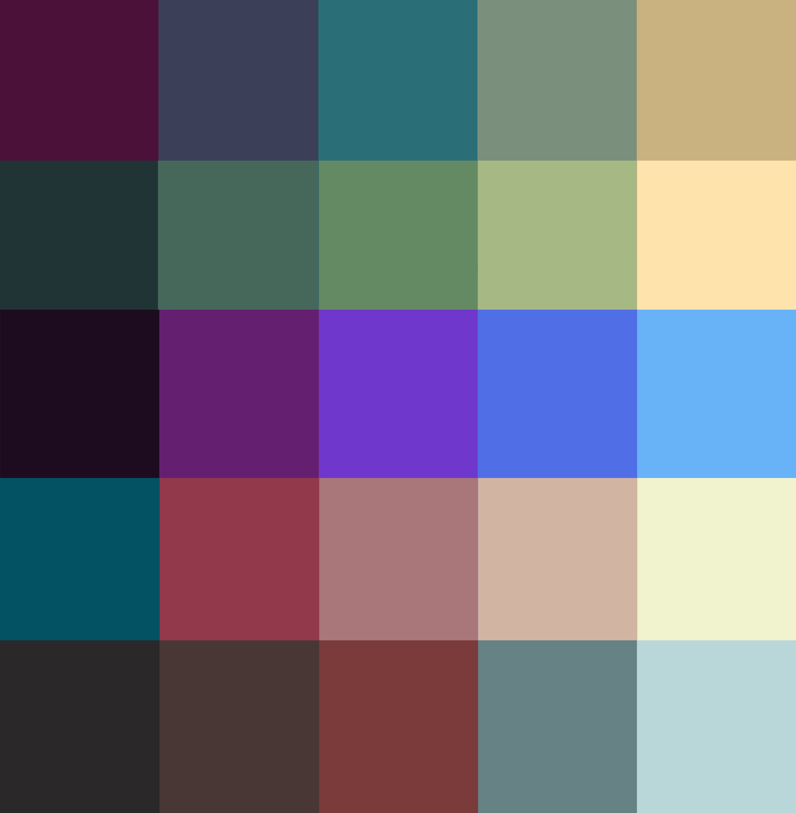

Añado mi portfolio como un proyecto más ya que he decidio implementar esta página web desde cero utilizando HTML, CSS y Javascript sin usar ninguna plantilla o librería como Thymeleaf o Bootstrap. Lo más destacable es el algoritmo de búsqueda de caminos A* que aparece en la portada de la web, la ola de colores que encabeza este apartado, la paleta de colores a elección del usuario, la batalla de misiles y el dibujado de circunferencias con el algoritmo del punto medio. Son retos de programación interesantes que dan vida a la web y mejoran su aspecto.
Impelementación del algoritmo de búsqueda de caminos A*. A estrella es un tipo de algoritmo de búsqueda en grafos de tipo heurístico o informado. Eso quiere decir que cuenta con información previa para tomar decisiones. Esta información previa se define como heurísitca y en este tipo de problemas de búsqueda de caminos, suele ser la distancia de Manhattan o la distancia Euclidiana.
Este mapa es un rectángulo de NxN en el cuál, al generarse, cada celda tiene un 30% de posibilidades de ser obstáculo. Cada 2 segundos, se eligen aleatoriamente dos puntos en el mapa que no sean obstáculo y que guarden una ruta válida entre ellos. Después, se simula el algoritmo dibujando las celdas pertenecientes a la lista cerrada y a la lista abierta (conceptos del algoritmo). Cuando termina, se resalta la ruta solución.
Esta ola de colores ha sido generada en base a una lista de colores, cinco en concreto, que son los de la paleta de colores activa. Con esos colores se realiza una interpolación para obtener el resto de colores intermedios hasta llegar al número de filas. Es decir, si tenemos 25 filas en la ola y 5 colores fuente, entre cada color se generarán 4 colores de tal forma que 5 colores originales más 20 interpolados suman 25, que es el número de filas en la ola.
En las olas de colores de encabezado (las que aparecen al principio de la página) tienen 180 filas por lo que no se aprecian prácticamente. Sin embargo, este ejemplo cuenta con 32 filas.
Al generar los colores de forma interpolada dependiendo del número de filas destino y la lista de colores fuente, se pueden generar infinitas olas de distintos colores y filas.
En la batalla de misiles gana el bando que consiga meter más misiles en el lado contrario. La puntuación se ve reflejada en el fondo. La aleatoriedad con la que se generan los misiles, es decir, dirección, probabilidad de instanciación y velocidad hacen que sea intersante ver que bando va a tener más suerte y llevarse la victoria.
Los colores de los elementos de la web y de las animaciones dependen de la paleta actual seleccionada.
¿Algoritmo del punto medio para circunferencias?
¿Algoritmos de ordenacion?
¿Minijuego en Phaser?